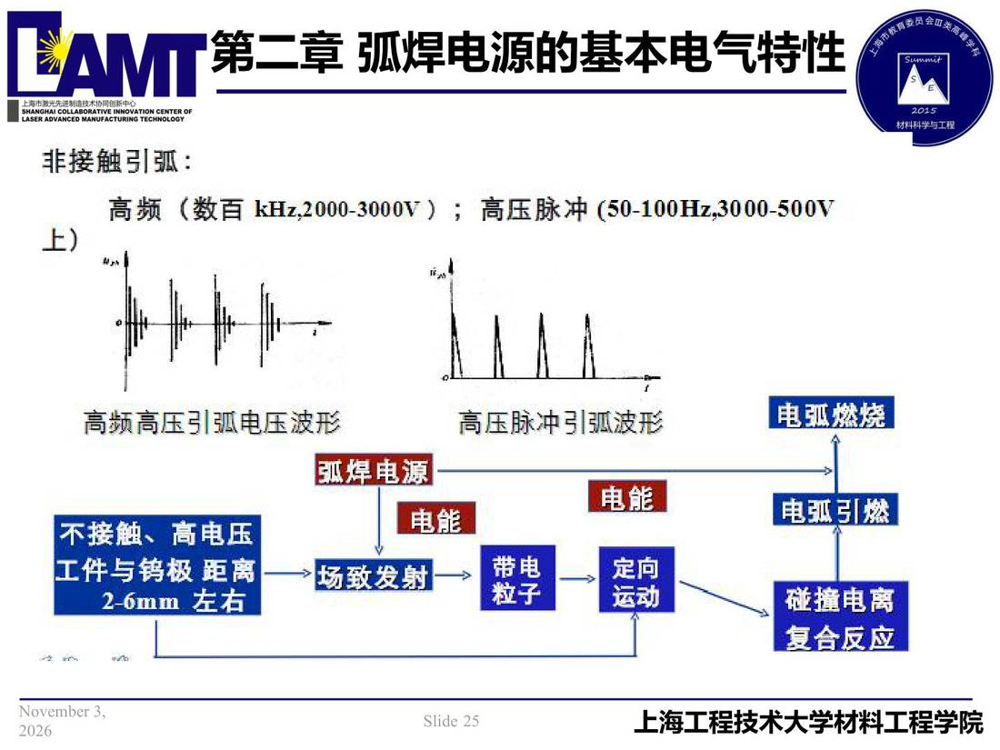

02 第2章 基本电气特性/p025 非接触引弧
p025 非接触引弧
📄 原文：📄 弧焊电源 课件（PDF 第 25 页）（幻灯片 25/273；PDF 第 25 页）
非接触引弧

讲义原文
本页在课件中是纯图文版式（无文字层），内容以页图与下面的 OCR 文本为准。
页面文字（OCR 机读，可能有错字，以页图为准）
非接触引弧： 高频（数百KHz,2000-3000V）；高压脉冲 （50-100Hz,3000-500V 高频高压引弧电压波形 不接触、高电压 工件与钨极 距离 2-6mm 左右 弧焊电源 →场致发射 电能 高压脉冲引弧波形 带电 粒子 电能 正口